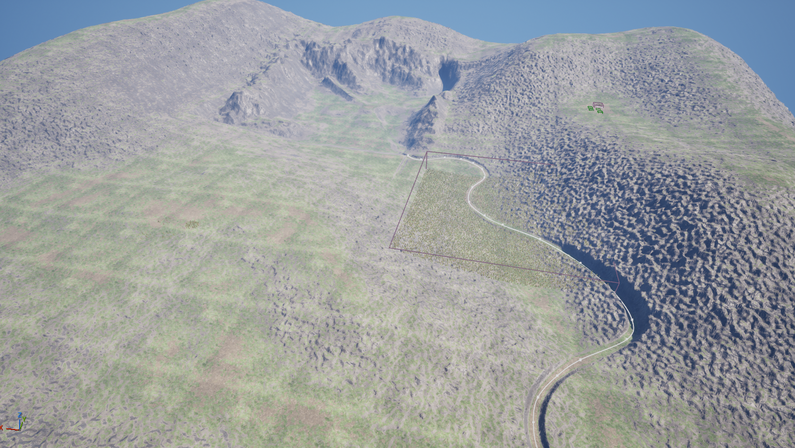
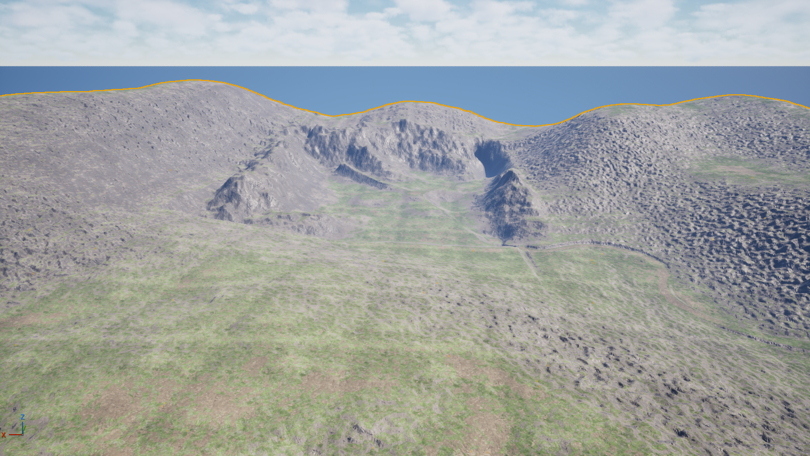
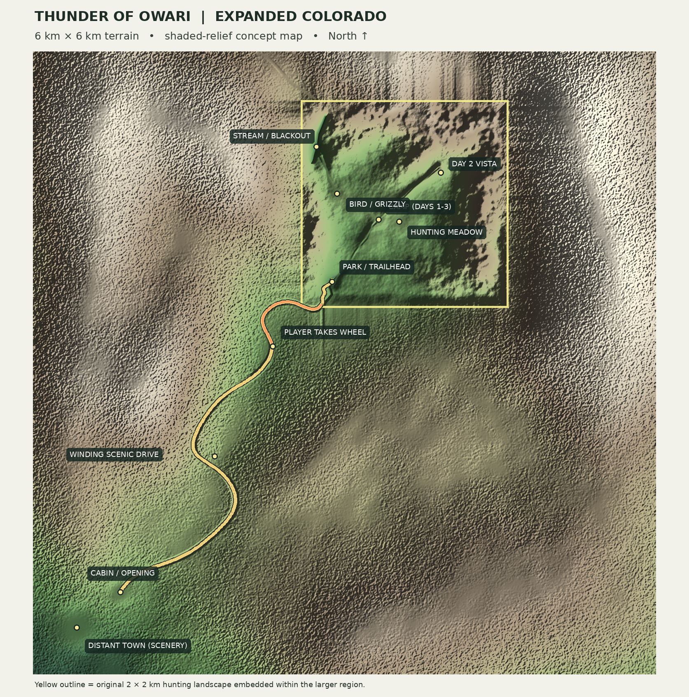
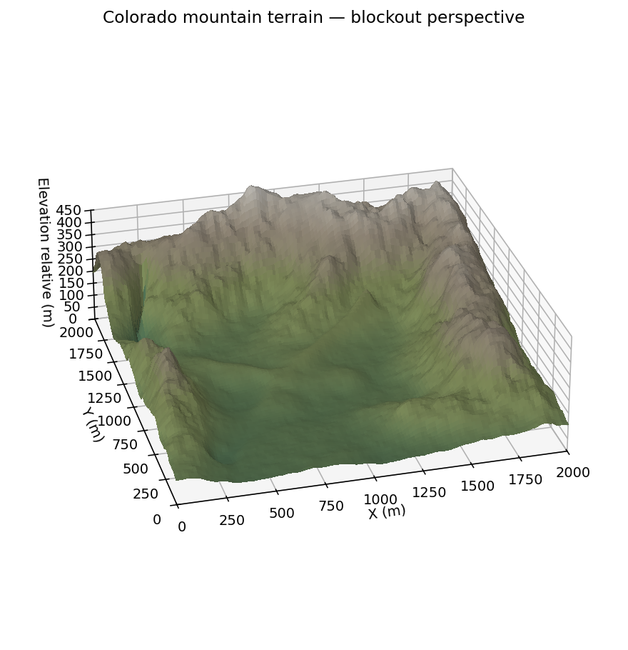
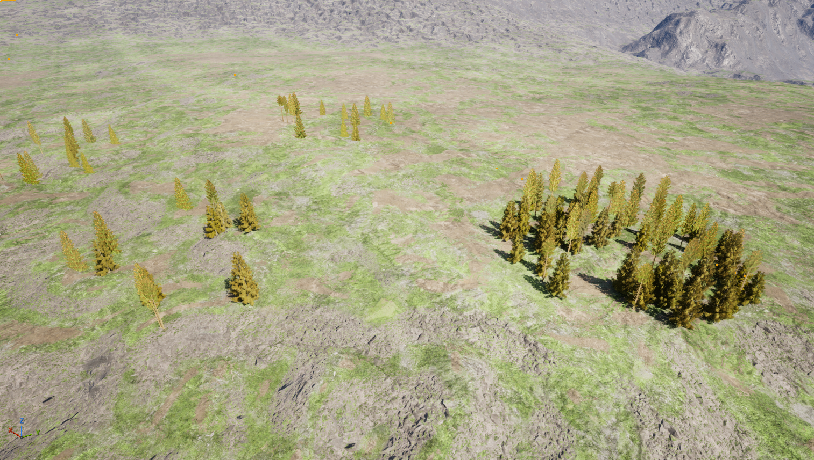
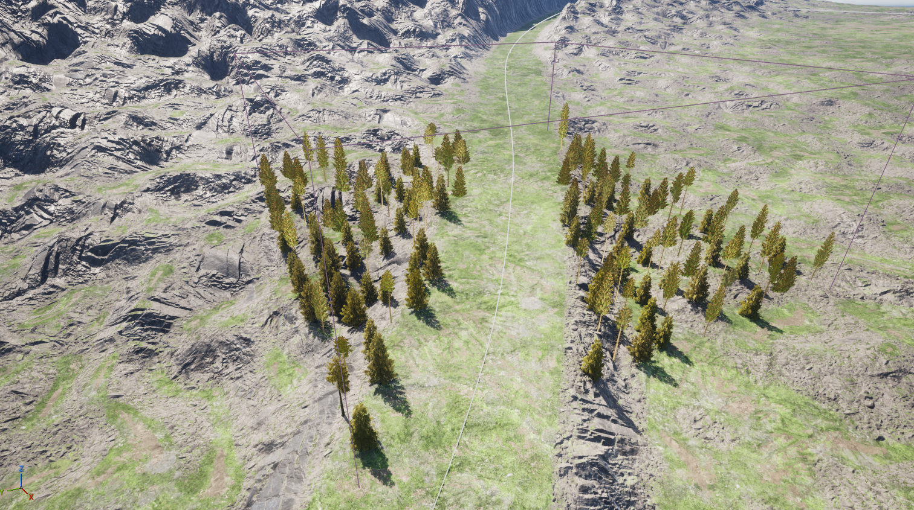
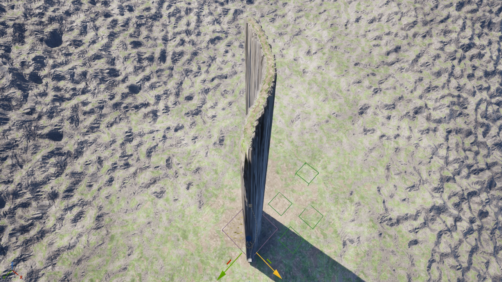
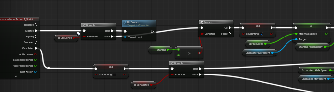

GAME DEVELOPMENT
Thunder of Owari
THE IDEA
A modern hunter in another time
Thunder of Owari is an open-world, story-driven game about a modern hunter who is suddenly thrown into mid-1500s Japan.
The character enters a world where almost everything is unfamiliar. The language is different, the culture is different, the people do not know who he is, and the way conflict is handled is completely different from the world he came from.
Rather than making the player feel like an outsider who somehow already understands everything, I want the player to learn about the world alongside the main character.
INSPIRATION
How the idea began
The original idea started after I read the manga series Jin.
Jin follows a modern Japanese surgeon who suddenly finds himself about 140 years in the past. While reading it, I started thinking about how interesting a similar idea could be if the main character were instead a modern hunter.
The idea stayed in the back of my mind until I later played and finished Ghost of Tsushima. That experience brought the earlier idea back and the two concepts started coming together into what would eventually become Thunder of Owari.
A large number of the details for the project also came to me later in a dream, which helped turn the general concept into a much more specific game idea.
THE WEAPON
Why a shotgun?
I wanted the main character's weapon to feel different from what I usually see in games built around historical Japan.
A shotgun immediately creates a contrast between the protagonist and the world he has entered.
I also expect much of the combat to take place at relatively close range. Because of that, a shotgun gives the character an extremely powerful weapon in those situations while still creating opportunities for the game to build systems and limitations around that power.
SETTING
Mid-1500s Japan
The historical period was chosen largely because of my interest in Oda Nobunaga and the world surrounding him.
Oda Nobunaga was one of the main reasons I became interested in setting the game in the mid-1500s. He is an extremely famous, and sometimes infamous, historical figure.
As I learned more about Nobunaga and the period he lived in, I increasingly felt that this was the right time for the story I wanted to tell.
The setting also creates the type of contrast I want for the protagonist.
He is not simply traveling somewhere unfamiliar. He has been separated from his own time by almost five centuries and placed into a society whose language, customs, technology, politics, and expectations are unfamiliar to him.
OPENING
Colorado before Japan
The Colorado opening was added later while I was deciding how to introduce the protagonist and the time-slip.
Hunting Trip
The game begins with the protagonist on a hunting trip in the Colorado mountains.
Exploration
Before the main story begins, the player has time to hunt and explore the wilderness rather than immediately being pushed into the historical setting.
The Incident
An encounter with a grizzly leads to a chase. The protagonist falls, strikes his head near a stream, and loses consciousness.
Awakening
He wakes inside a wooden building, bandaged and surrounded by people speaking a language he does not understand.
First Steps
Leaving the building reveals that he is no longer in modern Colorado and has somehow arrived in mid-1500s Japan.
A New World
From that point forward, both the character and the player have to begin understanding the people, rules, and dangers of this unfamiliar world.
COLORADO INSPIRATION
Part of the inspiration for starting the game in the Colorado wilderness came from a hiking trip I took with friends at Bear Lake, Colorado. I was struck by how beautiful the landscape was and wanted nature to have a meaningful presence in the opening of the game.
BUILDING COLORADO
Turning the opening into a playable environment
The Colorado opening has moved from planning into active environment development.


CURRENT ENVIRONMENT WORK
I am using these environment tests to evaluate scale, terrain shape, traversal space, and how the opening wilderness should feel before filling the landscape with more detailed gameplay and environmental content.
HEIGHTMAP DEVELOPMENT
Shaping the landscape
I use both 2D and 3D heightmap views to inspect the elevation and overall structure of the Colorado terrain.


WHY I USED HEIGHTMAPS
One of the earliest decisions I had to make when building the Colorado environment was how to create a large mountainous landscape efficiently.
Although Unreal Engine 5 provides tools for manually sculpting terrain, making and importing a heightmap took considerably less time than trying to sculpt the entire area by hand.
Using a heightmap allowed me to establish the elevation and overall terrain structure much faster, which made it easier to move on to testing scale, traversal, and environment generation.
PROCEDURAL ENVIRONMENT TESTING
Building forests without losing control of the level
I am experimenting with Unreal Engine's Procedural Content Generation tools to populate large areas while keeping important traversal spaces usable.


The goal is not simply to generate as many trees as possible. The procedural rules also need to respect areas that the player will move through.
Testing road exclusion is an early example of that approach. The forest can remain dense around the surrounding terrain while leaving the road itself clear for traversal.
DEBUGGING & PROBLEM SOLVING
Testing what breaks, not just what works
Environment development also involves documenting failed tests and unexpected results so I can understand what needs to be fixed or refined.

While experimenting with road generation, I encountered a case where the terrain broke and produced an extreme vertical deformation instead of following the expected landscape.
Not every system works correctly on the first attempt, and part of development is identifying where a process fails and working toward a better solution.
This particular issue is still being investigated as I continue developing the road-generation workflow.
PERFORMANCE OPTIMIZATION
Learning to build beyond the prototype
Performance became another challenge as I expanded the area where procedural trees were being generated and rendered.
The environment initially became noticeably choppy as the amount of rendered content increased.
That pushed me to begin learning more about Unreal Engine optimization rather than continuing to add content without considering its performance cost.
After making optimization changes, the same environment became substantially smoother during testing. I did not record exact frame-rate measurements during those early comparisons, so I am keeping the result qualitative rather than presenting unsupported FPS numbers.
DESIGN DIRECTION
Open world without traditional leveling
Open World
I ultimately want the player to be able to explore the world and discover people, locations, and quests rather than progress through a simple sequence of isolated levels.
Story Driven
The world exists to support a larger story and the relationships the player develops with the people living within it.
No Stat Grinding
I do not want the game to depend on gaining levels, collecting experience points, and repeatedly investing points into character statistics.
PLAYER CHOICE
Decisions should actually matter
One of my main goals is to avoid choices that only slightly change a conversation before sending the player back to essentially the same story.
I want quests and decisions to be capable of creating major changes.
The loss of an important character, for example, should be capable of drastically changing the direction of the story rather than simply removing that character from future scenes.
I want the player's version of the story to be shaped by what they actually did, who survived, who they helped, and what relationships they formed.
PLAYER EXPERIENCE
Learning alongside the character
I want the player to feel as though they themselves have been thrown into a world they do not understand.
They should not immediately know the language, the correct way to interact with local people, how the society works, or even how every part of the game's combat works.
Instead, those things should become familiar over time. The player and protagonist should be learning together.
I also want the people in the world to matter. My goal is for players to become attached enough to characters that their survival, death, friendship, betrayal, or absence genuinely changes how the player feels about what happens next.
GAMEPLAY DEVELOPMENT
Building the foundation first
Development began with the systems the player will use constantly before expanding into larger world development.
Sprinting is tied into the stamina system rather than acting as an unlimited speed increase.
The system includes stamina drain, regeneration behavior, low-stamina slowdown, and exhaustion.
Crouching changes movement speed and character behavior while integrating with sprinting and other movement states.
Directional dodging supports forward, backward, and side movement while taking camera direction and character orientation into account.
ANIMATION
Making the systems feel connected
Movement systems also need animation behavior that correctly responds to the player's state.

I have been working with Unreal Engine animation systems to connect standing, walking, crouching, sprinting, and dodging behavior to the movement systems underneath them.
This has included animation retargeting, blend-space work, movement transitions, crouched animation behavior, root-motion testing, and debugging problems where movement and animation did not agree with one another.
BLUEPRINT DEVELOPMENT
Building gameplay logic visually
Core gameplay behavior is being built with Unreal Engine's Blueprint visual scripting system.

CURRENT STATUS
Where development is now
Core Movement
Sprinting, stamina behavior, crouching, and directional dodging have been implemented and tested.
Colorado Environment
Terrain generation, heightmap development, map-scale testing, procedural vegetation, road testing, and performance refinement are currently active areas of development.
Animation
Movement animations, transitions, retargeting, and how those systems behave together continue to be refined.
Historical Japan
Development of the historical Japanese environments will come after the Colorado opening and its core gameplay systems are further developed.
WHAT'S NEXT
Expanding beyond the prototype
Colorado Wilderness
Continue refining terrain, procedural vegetation, roads, trails, traversal spaces, environmental detail, and optimization.
Hunting Systems
Expand the opening into a functional hunting experience rather than treating it only as a cinematic introduction.
Historical Japan
Begin building the first Japanese environment after the Colorado opening is further developed.
Characters
Develop the people who introduce the player to the world and begin establishing the relationships that drive the story.
Combat
Continue developing the combat systems needed to support the shotgun and close-range encounters.
Story Systems
Eventually build the quest and decision systems needed for major player choices to alter the storyline.
WHY THIS PROJECT MATTERS
More than a practice project
I eventually want Thunder of Owari to become my debut into the game industry.
Because of that, I have high hopes for the project, but I also hold it to a high standard.
I do not want to rush toward a finished game simply for the sake of saying that it is complete. I want the project to grow alongside my own skills and eventually represent the type of game-development work I want to be known for.
PROJECT GALLERY
Development gallery